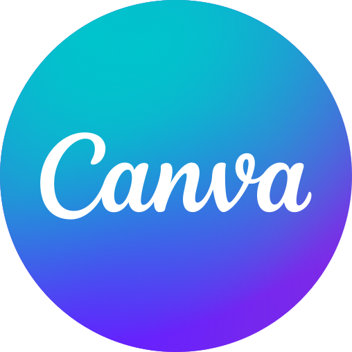

ستخرج من هذا التمرين بـ
- عرض من 6 شرائح بعناوين استنتاجية وملاحظات متحدث، كل رقم فيه مطابق لصفحته في التقرير.
- صورة غلاف مولّدة بإطار RICE، ملتزمة بدليل الهوية، مع الإفصاح.
- إنفوجرافيك من 4 أرقام معتمدة.
ما تحتاجه

Canva Copilot في PowerPoint
Copilot في PowerPoint
 Gemini Notebook
Gemini Notebook
 ChatGPT Images
Nano Banana (Gemini)
ChatGPT Images
Nano Banana (Gemini)
لا تتوفر لديك أداة عروض؟ اطلب من تطبيق المحادثة ملف PowerPoint مباشرة (ChatGPT وClaude ينشئان ملفات .pptx)، أو انسخ المخطط إلى PowerPoint أو Google Slides.
الخطوات
1 · القصة قبل الشرائح 6 دقائق
اقرأ العناوين الستة وحدها بالترتيب. هل تفهم القصة والقرار؟ إن لم تفهم، اطلب إعادة كتابة العناوين قبل أي تصميم.
2 · من المخطط إلى الشرائح 6 دقائق
انسخ المخطط النهائي إلى أداة العروض. أضف إليه سطر التصميم:
راجع: الاتجاه، والخط، والأرقام والنسب، والجداول. هل انعكس رسم أو جدول؟
3 · طابق كل رقم 4 دقائق
لكل رقم في الشرائح، افتح الصفحة المذكورة وتأكّد. ابدأ برقم رضا المستفيدين:
- ما الرقم في الملخص التنفيذي (الصفحة 2)؟ وما الرقم في جدول المؤشرات (الصفحة 3)؟
- أيهما المعتمد؟ اقرأ الملحق (الصفحة 12) عن طريقة جمع الاستبيان في سبتمبر.
- هل نبّهك التطبيق إلى الاختلاف، كما طلبت في الأمر؟
4 · صورة الغلاف 5 دقائق
افحص: الحواف، والأيقونات، والخطوط المستقيمة، وأي نص ظهر رغم المنع. أضف العنوان العربي في أداة العروض، واكتب أسفل الغلاف: «صورة مولّدة بالذكاء الاصطناعي».
5 · إنفوجرافيك من 4 أرقام 4 دقائق
اعتمد الأرقام بنفسك، ثم صمّمها في Canva أو أداة العروض كشريحة إضافية، بالنص العربي مكتوبًا في التصميم لا في صورة مولّدة.
✱ تمرين إضافي: اختبار العناوين
أرسل لزميل عناوين الشرائح الستة وحدها، دون الشرائح. اسأله سؤالين: «ما القرار المطلوب؟ ومتى؟». إن لم يُجب، فأعد كتابة العناوين.
أو جرّب في Gemini Notebook: ارفع التقرير، واطلب «عرض شرائح» أو «إنفوجرافيك» بالعربية، وقارنه بعرضك. أيهما أقرب للقرار؟
بديل للطلاب
حوّل تقرير مشروعك الجماعي أو فصلًا من مرجع مقرر إلى عرض من 6 شرائح لمناقشة مدتها 5 دقائق، بالخطوات نفسها. «القرار المطلوب» عندك قد يكون: ما الذي نوصي به؟ أو ما السؤال الذي نريد من الأستاذ الإجابة عنه؟
أسئلة تحقّق
- ما رقم الرضا الذي اعتمدته، ولماذا؟ هل نبّهك التطبيق إلى الاختلاف دون أن تسأله؟
- اقرأ عناوينك الستة: كم منها استنتاج، وكم منها موضوع؟
- ما الذي غيّرته في أداة العروض يدويًا؟ كم دقيقة أخذ؟ سجّله في سجلّ الإنتاجية.
ملاحظات المدرّب · المفتاح
- الفخ المقصود: الملخص التنفيذي (ص 2) يقول رضا المستفيدين ارتفع إلى 84%، وجدول المؤشرات (ص 3) يقول 81%. المعتمد 81%. والملحق (ص 12) يشرح أن الاستبيان تحوّل في سبتمبر إلى رسالة نصية وانخفضت الاستجابة من 31% إلى 12%، فتُقرأ نتيجة سبتمبر بحذر. وهذا يجيب أيضًا عن الرسالة 7 في البريد (التمرين 2.1).
- القرار المتوقع في القصة: اعتماد أمر التغيير (186,000) قبل 22 أكتوبر لحماية موعد الإطلاق، وتعزيز مؤقت للفريق في أسبوع الإطلاق. أي توصية لا يدعمها التقرير مباشرة مقبولة إن كانت مبررة بصفحات.
- ملاحظة: لم يبلغ أي مؤشر مستهدفه؛ أبعدها مدة المعالجة والقنوات الرقمية والالتزام باتفاقيات الخدمة (ص 2–3).
- أكثر الأخطاء شيوعًا: عناوين موضوعات («المؤشرات الرئيسية»)، وأرقام بلا صفحة، ونص عربي داخل الصورة المولّدة، ونسيان الإفصاح.
- إن تعطّلت أدوات العروض عن العربية، فمخطط القصة المراجَع هو المخرج الأهم؛ التصميم يُكمل لاحقًا.